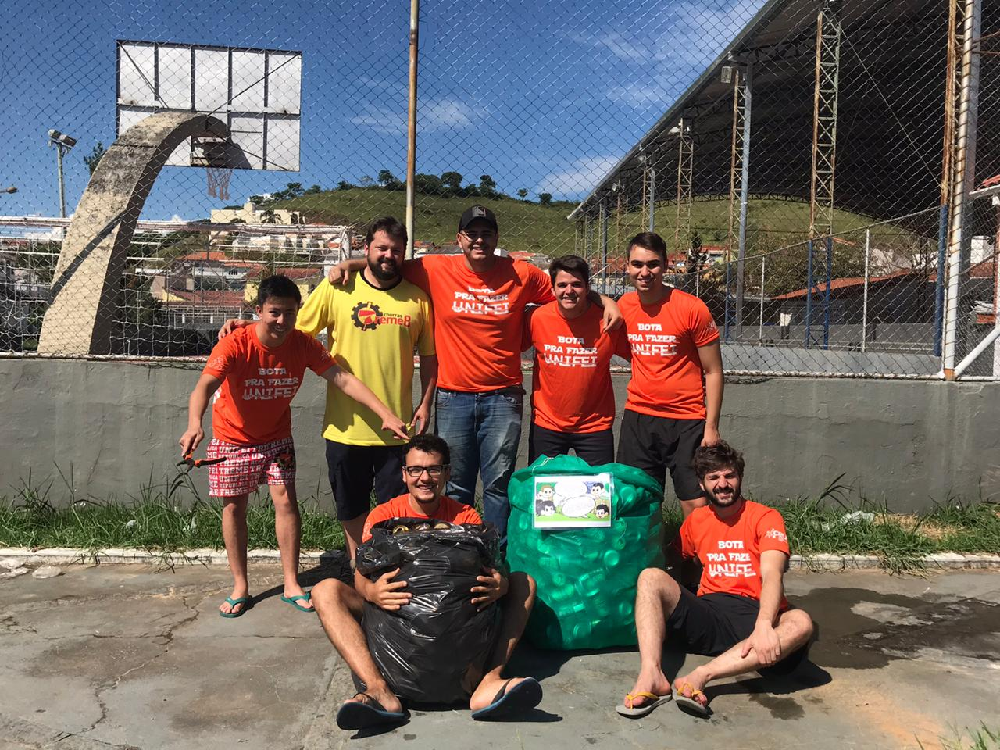
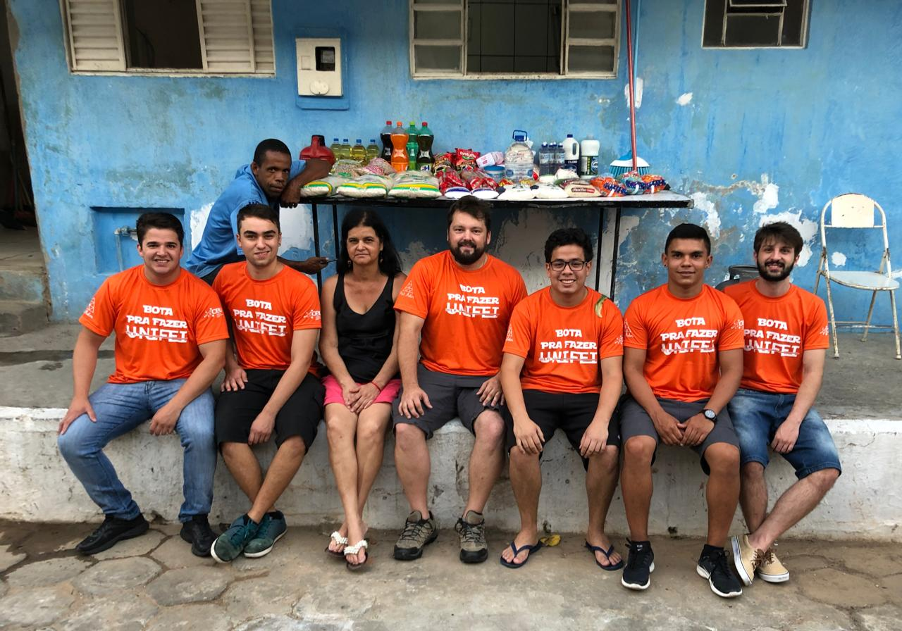

BOTA PRA FAZER

O Bota Pra Fazer foi o primeiro projeto que eu participei dentro da universidade. Foi algo muito satisfatório poder ajudar pessoas que realmente precisam de ajuda, pois a atividade desenvolvida durante esse projeto me fez perceber como coisas tão comuns e triviais para nós é algo de extrema necessidade para outros. Alguns dias antes da realização da nossa atividade do projeto, nossa república realizou um evento no espaço Albatroz. Com uma parte do dinheiro, compramos alimentos que seriam doados a um projeto chamado Irmãos de Rua, criado em 2002, com o objetivo de servir refeições a moradores de rua. Além disso, também participamos da preparação dos alimentos e servindo os pratos feitos.
← Voltar ao portfolio